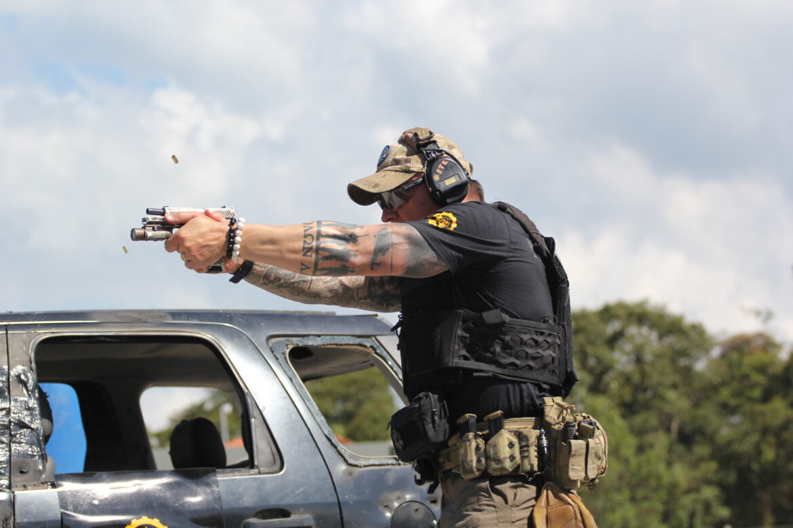
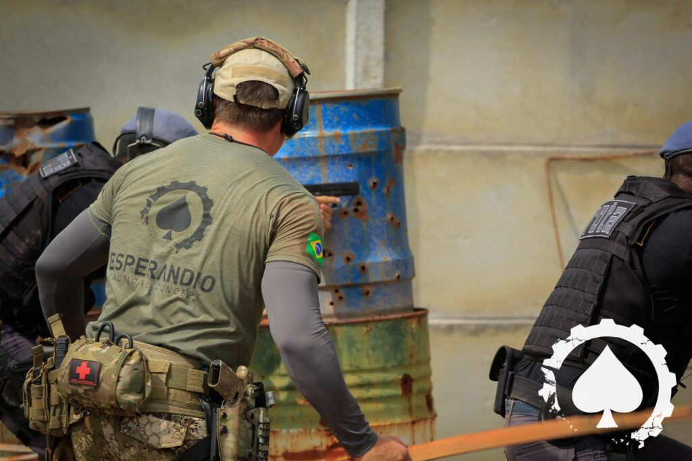

Divisão dos Módulos
Módulo 1: Operador de Pistola
[Descrição do Módulo 1]

Curso destinado a iniciantes que desejam se capacitar para a prova de capacitação técnica (Credenciamento de CR ou CRAF/PF) ou aqueles que buscam aprimorar os fundamentos com o armamento pistola e adquirirem maior precisão. O Curso visa a capacitação no uso de pistolas semiautomáticas.
Módulo 2: Combate Velado
[Descrição do Módulo 2]

Visa dar ao aluno que já realizou o Tático com Pistola I a oportunidade de rever os fundamentos do tiro e treinar as técnicas de saque de coldre velado e tiro de combate. É imprescindível que o aluno traga seu próprio equipamento completo (arma, coldre, porta carregadores) para uma avaliação se seu equipamento é adequado e possui as características necessárias para um bom funcionamento.
Módulo 3: VCQB
[Descrição do Módulo 3]
Existem alguns Princípios que regem o Combate Veicular(VCQB®), William Petty que é uma das referências nos EUA sobre o assunto que o VCQB® é “REPENTINO, de CURTA DURAÇÃO, ALTA INTENSIDADE, VIOLENTO e a CURTA DISTÂNCIA”. Com base nestes princípios o zero1 TACTICAL estendeu suas pesquisas aos PROTOCOLOS utilizados por unidades militares que são referência no mundo operacional e adaptando estes protocolos ao cenário nacional elaborou uma Doutrina única para o COMBATE VEICULAR(VCQB®) no Brasil.
Módulo 4: Tiro Avançado
[Descrição do Módulo 4]
Com o objetivo de dar continuidade ao conteúdo sobre confrontos armados, utilizando armas curtas, discutiremos nesse módulo o uso de barricadas, bem como a tomada de ângulos e tipos de deslocamentos. Pensando sempre na evolução e dinamismo do combate, agregaremos ao conteúdo tiro de sobrevivência, dinâmicas de combate em baixa visibilidade e contenção de sangramento massivo.
Voltar para a Página Inicial